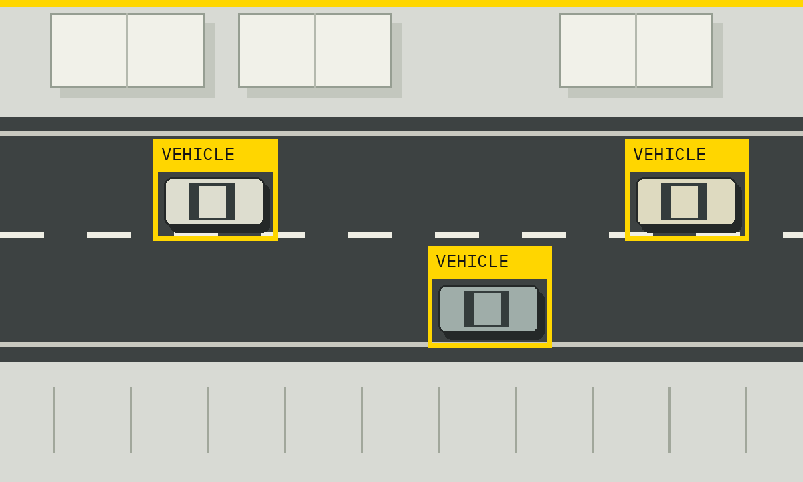
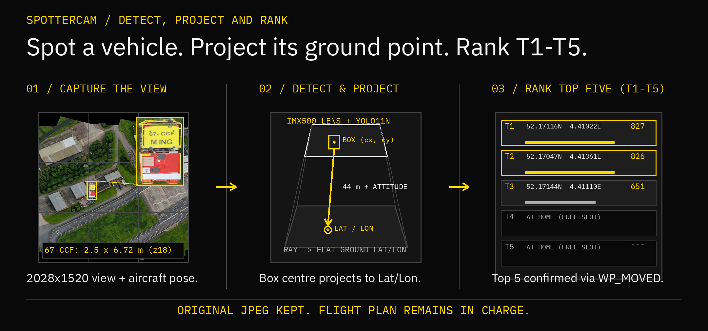
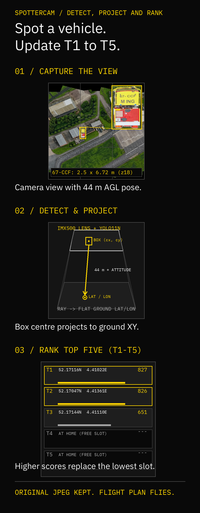
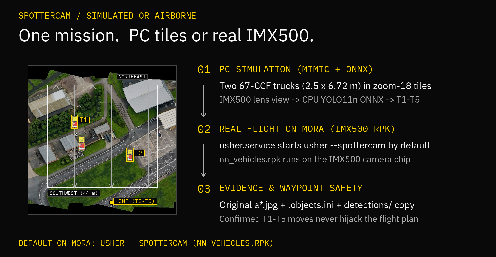
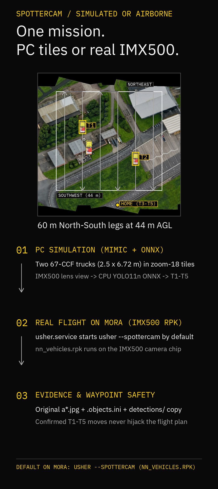

Spottercam: Look For Vehicles¶
Spottercam turns your airborne camera into a patient lookout. It inspects each captured photograph with a vehicle detector, keeps the original image untouched, and—when combined with aircraft pose and camera geometry—projects spotted vehicles onto the ground and ranks the five best finds as waypoints T1 to T5.
You do not need an airfield or a borrowed firetruck to try it. Start with a single saved picture or the interactive PC flight simulation, where two French 67-CCF firetrucks are parked on the map for your aircraft to discover, and move to MORA and the physical IMX500 AI Camera when you are ready to fly.
Detection terms | AI Camera setup | Paparazzi setup

Live Vehicle Search: Detect And Respond¶
Think of airborne vehicle search as three calm, well-separated jobs:
- Capture a clear view along with where the aircraft was and how it was tilted at that moment.
- Detect vehicles in the image and record their bounding boxes, subpixel
centres and confidence scores in a sidecar file (
*.objects.ini) without scribbling over the original photograph. - Project and rank the top five targets (
T1..T5) on the ground while leaving the flight plan in complete charge of where the aircraft actually flies.
A bounding box in a photograph is an observation, not a steering command. Even when Spottercam spots a bright red firetruck with high confidence, your flight plan keeps flying its survey rather than diving uninvited toward the truck.


Automatic Model Selection¶
One settings file—modules/spotter_cam/spottercam_settings.ini—serves both
real flights on MORA and simulated flights on your PC:
inference_backend=auto
input_source=live
model=models/nn_vehicles.rpk
score_threshold=0.6
class_index=0
max_detections=5
onnx_threads=1
inference_timeout_ms=2000
Why point to .rpk when your laptop does not have an IMX500 sensor wired to its
motherboard? Because inference_backend=auto knows the difference:
- On MORA with the physical IMX500 AI Camera, Spottercam uploads
models/nn_vehicles.rpkdirectly into the camera's onboard neural processor. - On a PC in simulation or saved-picture analysis, Spottercam automatically
checks
modules/spotter_cam/models/for the matching ONNX exports (vehicle_yolo11n_int8.onnxfirst, thenvehicle_yolo11n_fp32.onnx) with their.inidescriptors and runs whichever ONNX model the CPU runtime supports.
Paths inside the INI are relative to the INI file itself. See choose a model before substituting another export.
| Setting | Purpose |
|---|---|
inference_backend=auto |
Use IMX500 on hardware for .rpk, or probe the sibling CPU .onnx models on PC |
input_source=live |
Capture new images from the camera rather than analyse a single fixed file |
model |
Select the primary model file; ONNX exports also pair with a same-name .ini descriptor |
score_threshold, class_index, max_detections |
Set the minimum confidence (0.6), class (0) and box cap (5) for CPU ONNX detection |
onnx_threads, inference_timeout_ms |
Control CPU inference threads and the per-photo timeout in milliseconds |
The supplied IMX500 RPK decoder uses class 0 (vehicle), a 0.6 confidence
threshold and at most five boxes per image. Model choice and detector settings
are ignored when you run in photo-only mode.
| PC Demo Assignment | What Happens |
|---|---|
Compatible ONNX export present (direct or sibling of .rpk) |
Real neural inference on every simulated camera photograph |
| Unset/missing graph without a sibling ONNX export | Explicitly labelled seeded random spotting |
| Present but corrupt/incompatible graph or descriptor | Clear startup error—never silent random substitution |
| Valid inference with no vehicles in view | Zero detections (count=0), recorded cleanly as an empty frame |
Random spotting only exists as a fallback when no ONNX model is installed. The normal runtime never invents imaginary vehicles to cover up a broken model.


Try A Single Saved Picture First¶
Want to verify that the detector works on your PC in ten seconds flat, before starting a flight simulator? Run:
make -j32 spottercam
bin/spottercam --check-model --settings modules/spotter_cam/spottercam_settings.ini
To analyse any .jpg photograph on disk (using a fresh copy so no old .objects.ini
sidecar is in the way):
cp resources/mock_image_01.jpg /tmp/test-spotter.jpg
rm -f /tmp/test-spotter.objects.ini
bin/spottercam --analyze /tmp/test-spotter.jpg \
--settings modules/spotter_cam/spottercam_settings.ini --sequence 1
cat /tmp/test-spotter.objects.ini
This runs real CPU ONNX inference without needing a camera attached. Your input
JPEG is never re-encoded, and its SHA-256 hash is recorded inside
/tmp/test-spotter.objects.ini so detections can never be mixed up with another
picture. Build with CAMERA_CAPTURE=0 only on machines where you intentionally
skip camera support.
Five-Target Mock Survey¶
In the local simulation, your aircraft flies the survey in
examples/paparazzi/conf/flight_plans/SENSORAIA/sensoraia_spotter_cam_demo.xml
using the IMX500 camera lens profile (examples/pangea/aicam-2028.ini) and
native C USHER (--spottercam --spottercam-targets). On each wings-level shot,
USHER captures a mock vehicle scene (resources/mock_aicam_01.jpg), runs the
native YOLO11n ONNX detector in bin/spottercam, projects detected vehicles
onto the ground from the aircraft's pose, and sends ranked target updates for
waypoints T1..T5 directly over the simulated UART (digital_cam_point).
Follow these steps to fly the mission manually from takeoff to landing in Paparazzi Center—no physical camera, MORA board, or Python helper is needed:
1. Build Native PC Binaries And Install Paparazzi Links¶
From the Sensoraia root (with Paparazzi installed in ~/paparazzi):
2. Launch Paparazzi Center, Build NPS, And Execute The Session¶
Start Paparazzi Center from your Paparazzi directory:
(Setting MORA_UART_DEVICE="" forces PC-only simulation even if an FTDI cable
is plugged in.)
In Paparazzi Center:
- Set Config to
userconf/SENSORAIA/sensoraia_demo_conf.xmland Control panel touserconf/SENSORAIA/sensoraia_demo_control_panel.xml(./kickstart.shselects both by default). - Select aircraft
Easystar_3_SPOTTERCAMand targetnps, then click Build. - Open the Session tab, choose
Sensoraia Spottercam NPS, and click Execute (startingSensoraia USHER,Sensoraia NPS,Data Link,Server, andGCS Classic).
3. Take Off, Watch T1–T5 Update, And Land¶
In GCS Classic:
- Wait a few seconds until the aircraft icon appears and GPS shows a valid 3D
fix (
Wait GPSswitches toHolding point). - Click Takeoff in the GCS strip.
- The aircraft climbs, spirals down at
SOUTHWESTto the $44\text{ m}$ AGL survey height, and enters Survey (you can also click Find vehicle at any time from Standby). - Every three seconds on wings-level survey legs (bank angle within 12°), the
autopilot triggers a shot. USHER runs native YOLO11n ONNX detection in
bin/spottercam, ranks confidence (0..1000) across the five target slots (once all five slots are full, a strictly higher score replaces the lowest one), and transmits correlatedUSHER_CAM_POINT_UPDATEmessages over the simulated UART so the flight plan moves T1..T5 onto the projected coordinates using the ordinary GCS waypoint-update mechanism (WP_MOVED). - After the 160-second survey completes, the aircraft automatically flies its baseleg, final glide, and flare to touchdown. Stop all session programs in Center when finished.
4. Inspect Your Saved Photos And Detections¶
Check ~/Pictures/sensoraia/ after the flight:
| Saved File Or Folder | What You Will Find Inside |
|---|---|
~/Pictures/sensoraia/ma*.jpg |
Saved mock camera JPEGs tagged with EXIF flight pose and Spottercam detection summary |
~/Pictures/sensoraia/ma*.objects.ini |
Validated USHER_OBJECTS_V2 sidecars with bounding boxes, centres, scores, and SHA-256 bindings |
~/Pictures/sensoraia/detections/ |
Convenience copies of photographs containing accepted vehicle detections |
Locating real image boxes requires pose and camera projection. The supplied projection profile is illustrative, not a measured calibration. Unusable geometry (such as a steep bank during a U-turn) does not authorize moving a waypoint, and a valid model can find fewer than five objects or none.
Use A Physical Camera¶
When you move from your desk to the airfield with a real vehicle on the ground,
Spottercam runs on MORA with the Raspberry Pi AI Camera (IMX500) and
executes modules/spotter_cam/models/nn_vehicles.rpk directly on the camera's
neural chip.
1. Check The Camera And Model Selection On Your PC¶
Spottercam is already the default camera (CAMERA = spottercam in
camera.conf), which configures MORA's usher.service with:
And modules/spotter_cam/spottercam_settings.ini already selects
model=models/nn_vehicles.rpk with inference_backend=auto.
Whenever you want MORA to boot with a different sensor instead of Spottercam,
edit CAMERA in camera.conf (or pass CAMERA=<name> to make mora-deploy—no
service-file editing required):
| Desired MORA Startup Mode | camera.conf / make mora-deploy Setting |
|---|---|
Spottercam (default: IMX500 + nn_vehicles.rpk) |
CAMERA=spottercam |
| AIcam (IMX500 native photos, no model) | CAMERA=aicam |
| LWIRcam (Tiny1-C / TDK USB thermal camera) | CAMERA=lwircam |
| CHDKbridge (Canon USB camera with CHDK) | CAMERA=chdk |
| EARcam (USB microphone acoustic search) | CAMERA=earcam |
| LOOMcam (visual homing framework on IMX500) | CAMERA=loomcam |
| Diplacam (native GP/diffusion field planner) | CAMERA=diplacam |
Spottercam, AIcam and LOOMcam are alternative owners of the same physical
IMX500 ribbon camera—pick one at a time. To package a custom Spottercam
settings file and its model, pass
MORA_SPOTTERCAM_SETTINGS=/absolute/path/spottercam_settings.ini to
make mora-deploy. See
deploy and select a profile
and model selection.
2. Build And Deploy To MORA¶
Prepare the AI Camera hardware (connect the ribbon cable with power off). Then, from the Sensoraia root on your PC, build and deploy the release to MORA:
Confirm that usher.service is active and running --spottercam:
ssh air@theatre.local 'systemctl --no-pager --full status usher.service'
ssh air@theatre.local 'journalctl -u usher.service -n 50 --no-pager'
3. Perform A Bench Or Flight-Line Check Before Takeoff¶
Before launching the aircraft, verify that the IMX500 camera and
nn_vehicles.rpk capture and analyse a real frame cleanly (discovering a lens
cap on the bench is much nicer than discovering it at $44\text{ m}$).
Either trigger a single camera-2 shot from your connected flight controller (or FTDI desk setup), or run a standalone check on MORA by stopping the service briefly, taking one test photo, and starting the service again:
bin/spottercam --probe /home/air/sensoraia/models/ai_cam/nn_vehicles.rpk
bin/spottercam --capture /home/air/sensoraia/models/ai_cam/nn_vehicles.rpk /home/air/Pictures/bench-check.jpg
Initial RPK upload to the IMX500 takes a few seconds longer than subsequent
shots. Always use a new output filename and restart usher.service after a
standalone test so USHER owns the camera for flight.
4. Fly The Real Survey And Inspect Captured Evidence¶
- Flash or configure your autopilot with
digital_cam_uartand the survey flight plan (sensoraia_spotter_cam_demo.xml, adjusted for your airfield's coordinates and safe altitude). - Connect the flight-controller UART to MORA (
/dev/serial0, 115200 baud, 3.3 V logic, crossed TX/RX and common ground) and power the system. - After takeoff, enter Find vehicle (
Start demo$\rightarrow$Survey). On each periodic trigger, USHER captures a $2028 \times 1520$ JPEG and on-sensornn_vehicles.rpkdetections, writes synchronized flight EXIF (SENSOR02frame timing, GPS, attitude, and detection summary), and copies any photograph with a vehicle hit into~/Pictures/sensoraia/detections/while SODA writes annotated review crops. - After landing, retrieve the original
a*.jpgphotos,a*.objects.inisidecars, anddetections/copies from/home/air/Pictures/sensoraia/.
Optional: Native Photo-Only Mode On MORA¶
If you want fast native IMX500 photographs without loading a model or running
detection, simply deploy with CAMERA=aicam (make mora-deploy CAMERA=aicam),
or run --spottercam --native-photo in a standalone session.
Repackage and deploy after changing the line. --native-photo needs no model,
cannot be combined with --spottercam-settings, and saves a $2028 \times 1520$
quality-90 JPEG with sensor timing evidence but no detection metadata or SODA
analysis. For a standalone photo-only check on MORA from /home/air/sensoraia
(with usher.service stopped):
bin/spottercam --photo-only --probe
bin/spottercam --photo-only --capture /home/air/Pictures/spotter-photo.jpg
Restore usher.service afterward. See
native photographs
and the camera speed test for timing and
throughput options.
Use LWIR Photos (Future & Multi-Sensor Option)¶
LWIRcam can remain the sole Tiny1C camera owner while a separate persistent
Spottercam CPU worker analyses each completed thermal JPEG. Its assignment is
independent of the AI Camera assignment. Supply an ONNX detector trained and
independently evaluated on representative Tiny1C imagery, plus its matching
spotter_boxes_xyxy_v1 descriptor. The supplied
modules/spotter_cam/spottercam_lwir_settings.ini is a template, not a trained
thermal model. Keep the inference image rendering consistent with training.
This includes JPEG quality, which normal LWIR captures now default to 95.
Legends are rejected and missing real temperature/frame evidence is an error.
make usher spottercam CAMERA_CAPTURE=0
bin/spottercam --check-model --settings /absolute/lwir-detector.ini
./usher --lwircam --lwir-spotter-settings /absolute/lwir-detector.ini
Capture and flight EXIF complete before inference enters the existing bounded saved-file queue. One warm detector retains the model; source images and temperature planes are never rewritten. Overflow retains originals for offline analysis. Detector errors never discard a photo or reuse an earlier detection. SODA retries do not repeat object inference. This is asynchronous per-photo analysis, not a promise to analyse every camera stream frame.
Each accepted result has an .objects.ini model record and an additional
.lwir-objects.ini record binding the photo number, frame/boot identity, source
and model hashes, native subpixel centres and nearest-pixel temperatures.
Invalid endpoint temperature codes are reported unavailable, not converted to
Celsius. A valid zero-detection result is different from failed analysis.
Results are local evidence; this option does not move aircraft waypoints or add
new flight-controller messages. Existing SODA AI-camera EXIF summaries are not
automatically written into these unchanged LWIR originals.
To enable geographic estimates, additionally supply a measured native 256x192
PANGEA_CAMERA_V1 profile with the l prefix, correct intrinsics and mounting:
./usher --lwircam --lwir-spotter-settings /absolute/lwir-detector.ini \
--lwir-spotter-profile /absolute/measured-lwir-camera.ini \
--lwir-spotter-limits 5000,1
The limits are maximum exposure-interval width in microseconds and maximum
pose uncertainty in metres. Defaults are 5000 us and 1 m, not measured accuracy.
Projection requires an exposure-qualified aligned pose belonging to the exact
frame. Frame arrival alone, missing pose/calibration, broad timing or excessive
uncertainty leaves detections and temperatures usable but omits target latitude
and longitude. Use the existing clock alignment and measured
--lwir-latency-ms MIN,MAX facilities where applicable; never guess latency or
relax limits merely to obtain coordinates. All three aircraft attitude axes and
camera mounting rotations are applied through shared geometry. Detector centres
retain subpixel precision; only temperature sampling rounds to a native pixel.
Ground projection assumes a local flat surface and a calibrated pinhole camera.
Lens distortion, terrain, target elevation and physical timing/calibration errors
still require independent field validation; extra decimal places do not prove
pinpoint accuracy. Temperatures remain device-reported and uncalibrated.
An opt-in package includes the detector and chosen model without changing the ordinary LWIR-only default:
The package enables saved-photo detection but does not invent a projection calibration. Deploy separately only when the selected trained model is ready. Measure latency and total shared 512 MB board headroom with the real model.
Keep The Evidence¶
USHER stores the selected detection summary with the original JPEG's flight metadata. SODA may make annotated/cropped review copies and a detection log. The original flight photo remains undecorated.
A bounding box is an image result, not automatically a geographic target. Where a valid target is integrated, the flight plan still decides whether to visit it. Confidence, target freshness and geographic accuracy are different questions.
Supply A Different Vehicle Model¶
An arbitrary YOLO export or unrelated RPK is not automatically compatible. Keep the class mapping, preprocessing and output contract with the export. If using a Vehicles dataset, retain its exact source/version, permitted use and independent evaluation. The filename does not identify the dataset release or establish detector accuracy.
MIMIC views or saved photos may support external evaluation where imagery rights permit. Choose views representative of the camera, add independent labels and separate evaluation data. A north-up map or annotated SODA crop is not automatically a ready-made training dataset.
Troubleshooting¶
| Symptom | What To Check First |
|---|---|
local mode is already running or /tmp/usher-sim busy |
Stop the previous Center session or remove /tmp/usher-sim after confirming no USHER is running |
| Want hardware-in-the-loop over FTDI instead of PC USHER | Select the Sensoraia MORA desk NPS session in Paparazzi Center (see the desk-test guide) |
--mock-map needs zoom-18 XYZ JPEGs |
Pan over the survey area at zoom 18 in PprzGCS so ~/.local/share/paparazzi/pprzgcs/map/GOOGLE/18 is populated |
Photos saved (ma*.jpg), but T1..T5 stay at HOME |
Check the USHER console and *.objects.ini sidecars; shots during steep turns (bank angle 12° or more) are skipped by the flight plan |
| Real MORA camera busy | Ensure only one IMX500 owner (--spottercam, --aicam, or --loomcam) is running; stop usher.service before standalone --probe or --capture |
Model errors stop fresh target publication; existing points are not proof of new observations. Check the selected assignment and worker log before restarting. A successful image with zero detections is not an analysis failure. For hardware problems, check camera ownership, cabling and runtime packages. Validate camera geometry, timing and loaded MORA resources separately before relying on real-flight locations.